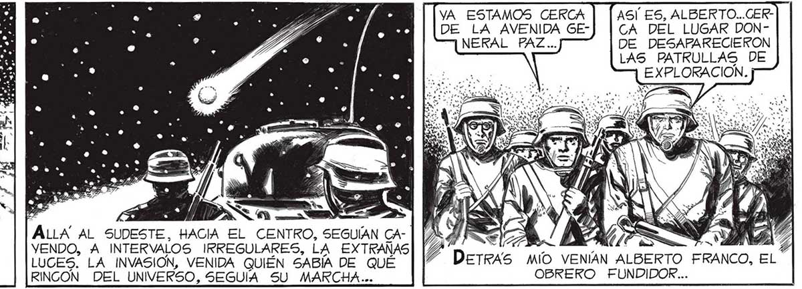
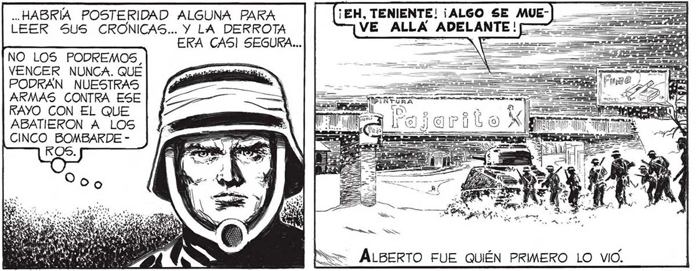

88 AVANZAMOS LENTAMENTE. EN PARTE Í PORQUE LOS CAÍDOS OBSTACULIZABAN ===] LA MARCHA; = EN PARTE POR: j QUE MARCHABAMOS CON LA CERTEZA DE QUE IBAMOS AL SACRIFICIO: NUNCA SE APU- ÁMANECIA. EL SOL NACIENTE SE REFRACTABA EN LOS 1] PP” : COPOS DE LA NEVADA MORTAL, DESCOMPONIENDOSE EN ALLA. AL SUDESTE, HACIA EL CENTRO, SEGUÍAN CATENUES TONOS DE ARCO IRIS; SI NO REPRESENTARA VENDO, A INTERVALOS IRREGULARES, LA EXTRAÑAS - TANTA MUERTE NO CREO QUE HUBIERA COSA MAS LUCES. LA INVASION, VENIDA QUIÉN SABÍA DE QUÉ MARAVILLOSA QUE AQUELLA I¡NACABABLE NEVADA. RINCON DEL UNIVERSO, SEGUIA SU MARCHA... SON LAS SIETE Y DIEZ... ANOTAR LA .. HABRÍA POSTERIDAD ALGUNA PARA ¡EH, TENIENTE! ¡ALGO SE MUEHORA: QUERIA LEER 5US CRONICAS... Y LA DERROTA VE_ALLA ADELANTE! Li. EGISTRAR PA- ERA CAS] SEGURA... p E A reo [NO LOS PODREMOS RAN LOS CONDE- P Un TANQUE NOS PRECEDÍA. LUEGO IBAN LOS MILICIANOS, NADOS A CONMIGO COMO JEFE; DETRAS NUESTRO, A PRUDENTE MUERTE. DISTANCIA, OTRO TANQUE PROTEGIENDO A UN CENTENAR DE SOLDADOS. VA ESTAMOS CERCA ASÍ ES, ALBERTO...CERDE LA AVENIDA GE-] | CA DEL LUGAR DONNERAL PAZ... DE DESAPARECIERON LAS PATRULLAS DE EXPLORACION. A Y 77M : PL PF Derras MÍO VENÍAN ALBERTO FRANCO, EL OBREKO FUNDIDOR... ESTÁBAMOS A PUNTO DE DAD HASTA EL. | VENCER NUNCA. QUÉ FASAR BAJO 3 ÚLTIMO DETALLE | PODRAN NUESTRAS EL PUENTE ss ARMAS CONTRA ESE PRI EN RAYO CON EL QUE TRO ENTRE LAS ABATIERON A LOS DEL FERROCARRIL GENERAL FUERZAS DEFEN- SINER EQUPEDE* SORAS DE LA TIERRA Y LOS INVASORES. NO SE DABA CABAL CUENTA DE QUE, LO MAS PROBABLE, 5! NOS DERROTABAN NO... Ñ ... Y RUPERTO MOSCA EL HISTORIADOR... LE VI... BELGRANO. MÁS ALLA, SE VEIA EL TERRAPLÉN DE LA AVENIDA GENERAL PAZ. SMs= ÁLBERTO FUE QUIÉN PRIMERO LO VIO.

